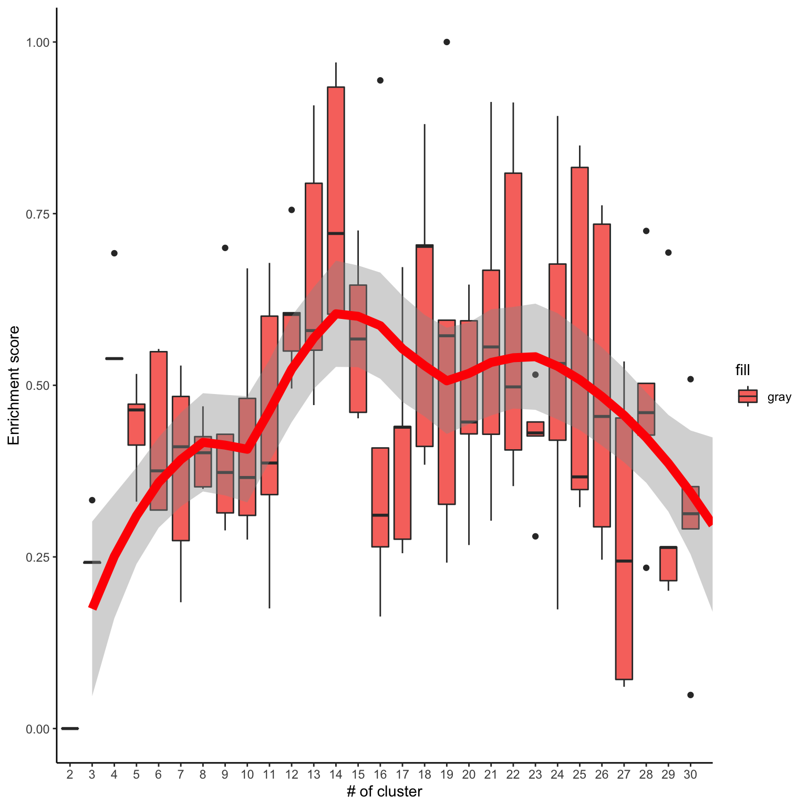
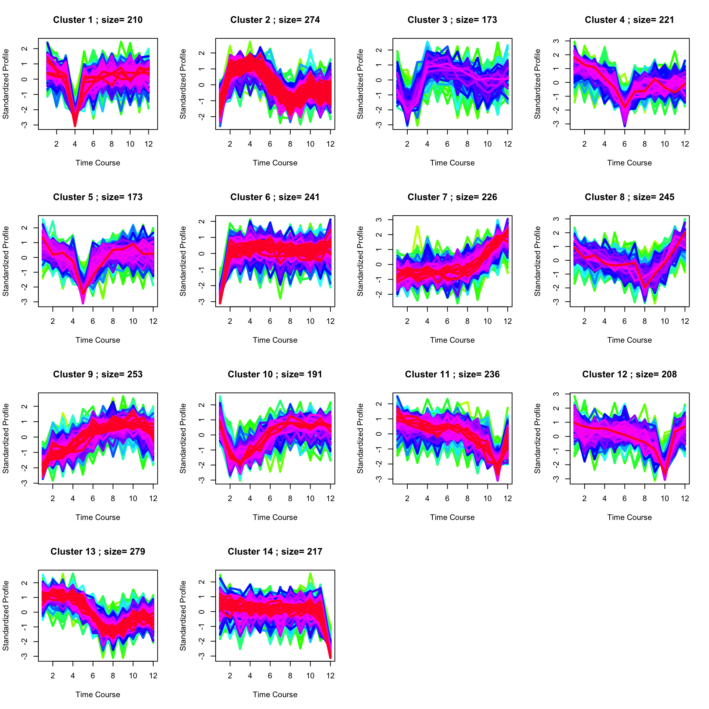

While 1, 2, and 3D pathway analyses are useful for data generated from experiments with different treatment/conditions, analysis designed for time-course data may be better suited to analysis experiments that profile multiple time points such as in the ESC differentiation experiment.
Here, we will introduce ClueR which is an R package specifically designed for time-course proteomic and phosphoproteomic data analysis ([Pengyi Yang et al. 2015])(https://journals.plos.org/ploscompbiol/article?id=10.1371/journal.pcbi.1004403).
Let us start with gene-centric analysis. Such analysis can be directly applied to proteomics data. It can also be applied to phosphoproteomic data by using the phosCollapse function to summarise phosphosite information to the gene level.
suppressPackageStartupMessages({
library(PhosR)
library(ClueR)
library(ggplot2)
library(parallel)
})# load example data
data("phosphoESC")
# summarise phosphosite information to the gene level
phosphoESC.sum <- phosCollapse(phosphoESC, gsub(";.+", "", rownames(phosphoESC)), stat = apply(abs(phosphoESC), 1, max), by = "max")
rownames(phosphoESC.sum) <- toupper(rownames(phosphoESC.sum))# NOT RUN. to save the time the following block is not run.
# perform ClueR to identify optimal number of clusters.
RNGkind("L'Ecuyer-CMRG")
set.seed(123)
c1 <- runClue(phosphoESC.sum, annotation=Pathways.reactome, kRange = 2:30, rep = 5, effectiveSize = c(5, 100), pvalueCutoff = 0.05, alpha = 0.5)Visualise the evaluation results
load("phosphoESC_cluster.RData")
data <- data.frame(Success=as.numeric(c1$evlMat), Freq=rep(2:30, each=5))
myplot <- ggplot(data, aes(x=Freq, y=Success)) + geom_boxplot(aes(x = factor(Freq), fill="gray"))+
stat_smooth(method="loess", colour="red", size=3, span = 0.5) + xlab("# of cluster")+ ylab("Enrichment score")+theme_classic()
myplot
Finding enriched pathways from each cluster.
set.seed(123)
best <- clustOptimal(c1, rep=5, mfrow=c(4, 4), visualize = TRUE)
best$enrichList## $`cluster 1`
## kinase
## [1,] "REACTOME_3_UTR_MEDIATED_TRANSLATIONAL_REGULATION"
## [2,] "REACTOME_ACTIVATION_OF_THE_MRNA_UPON_BINDING_OF_THE_CAP_BINDING_COMPLEX_AND_EIFS_AND_SUBSEQUENT_BINDING_TO_43S"
## [3,] "REACTOME_TRANSLATION"
## [4,] "REACTOME_FACTORS_INVOLVED_IN_MEGAKARYOCYTE_DEVELOPMENT_AND_PLATELET_PRODUCTION"
## [5,] "REACTOME_RNA_POL_I_RNA_POL_III_AND_MITOCHONDRIAL_TRANSCRIPTION"
## [6,] "REACTOME_REGULATION_OF_MRNA_STABILITY_BY_PROTEINS_THAT_BIND_AU_RICH_ELEMENTS"
## pvalue size
## [1,] "0.00718521874816707" "7"
## [2,] "0.0106329485150802" "5"
## [3,] "0.0112516342829819" "8"
## [4,] "0.0193913125843314" "7"
## [5,] "0.0223382946379903" "5"
## [6,] "0.0402422110563673" "5"
## substrates
## [1,] "EIF2S2|EIF3B|EIF3D|EIF4G1|RPL13|RPL15|RPS17"
## [2,] "EIF2S2|EIF3B|EIF3D|EIF4G1|RPS17"
## [3,] "EIF2S2|EIF3B|EIF3D|EIF4G1|RPL13|RPL15|RPS17|SRP72"
## [4,] "CBX5|H3F3A|HIST1H3A|KIF18A|KIF22|KIF5B|RACGAP1"
## [5,] "H3F3A|HIST1H3A|MNAT1|POU2F1|SNAPC4"
## [6,] "DCP1A|EIF4G1|PARN|PSMA3|XRN1"
##
## $`cluster 2`
## kinase
## [1,] "REACTOME_MAPK_TARGETS_NUCLEAR_EVENTS_MEDIATED_BY_MAP_KINASES"
## [2,] "REACTOME_RECYCLING_PATHWAY_OF_L1"
## [3,] "REACTOME_NUCLEAR_EVENTS_KINASE_AND_TRANSCRIPTION_FACTOR_ACTIVATION"
## [4,] "REACTOME_ACTIVATION_OF_NMDA_RECEPTOR_UPON_GLUTAMATE_BINDING_AND_POSTSYNAPTIC_EVENTS"
## [5,] "REACTOME_CREB_PHOSPHORYLATION_THROUGH_THE_ACTIVATION_OF_RAS"
## [6,] "REACTOME_POST_NMDA_RECEPTOR_ACTIVATION_EVENTS"
## [7,] "REACTOME_NGF_SIGNALLING_VIA_TRKA_FROM_THE_PLASMA_MEMBRANE"
## [8,] "REACTOME_TRAF6_MEDIATED_INDUCTION_OF_NFKB_AND_MAP_KINASES_UPON_TLR7_8_OR_9_ACTIVATION"
## [9,] "REACTOME_MYD88_MAL_CASCADE_INITIATED_ON_PLASMA_MEMBRANE"
## [10,] "REACTOME_ACTIVATED_TLR4_SIGNALLING"
## [11,] "REACTOME_MAP_KINASE_ACTIVATION_IN_TLR_CASCADE"
## [12,] "REACTOME_TOLL_RECEPTOR_CASCADES"
## [13,] "REACTOME_L1CAM_INTERACTIONS"
## [14,] "REACTOME_INTEGRATION_OF_ENERGY_METABOLISM"
## [15,] "REACTOME_SIGNALLING_BY_NGF"
## [16,] "REACTOME_TRANSMISSION_ACROSS_CHEMICAL_SYNAPSES"
## [17,] "REACTOME_NFKB_AND_MAP_KINASES_ACTIVATION_MEDIATED_BY_TLR4_SIGNALING_REPERTOIRE"
## [18,] "REACTOME_TRANSMEMBRANE_TRANSPORT_OF_SMALL_MOLECULES"
## [19,] "REACTOME_NEUROTRANSMITTER_RECEPTOR_BINDING_AND_DOWNSTREAM_TRANSMISSION_IN_THE_POSTSYNAPTIC_CELL"
## [20,] "REACTOME_SEMAPHORIN_INTERACTIONS"
## [21,] "REACTOME_IMMUNE_SYSTEM"
## [22,] "REACTOME_AXON_GUIDANCE"
## [23,] "REACTOME_TRIF_MEDIATED_TLR3_SIGNALING"
## [24,] "REACTOME_NEURONAL_SYSTEM"
## [25,] "REACTOME_INNATE_IMMUNE_SYSTEM"
## [26,] "REACTOME_SLC_MEDIATED_TRANSMEMBRANE_TRANSPORT"
## pvalue size
## [1,] "0.000418707002507505" "6"
## [2,] "0.000453826961077179" "5"
## [3,] "0.000843410289414608" "5"
## [4,] "0.0014370374202571" "5"
## [5,] "0.0014370374202571" "5"
## [6,] "0.0014370374202571" "5"
## [7,] "0.00364954632797451" "10"
## [8,] "0.00428244102661531" "7"
## [9,] "0.00428244102661531" "7"
## [10,] "0.00680158738495657" "7"
## [11,] "0.00728398500903662" "6"
## [12,] "0.00841017739648185" "7"
## [13,] "0.0116855961801612" "6"
## [14,] "0.0124458974944547" "5"
## [15,] "0.0126790639715247" "13"
## [16,] "0.0144721519888299" "6"
## [17,] "0.0176899554505819" "6"
## [18,] "0.0183139406318581" "10"
## [19,] "0.020252374963489" "5"
## [20,] "0.020252374963489" "5"
## [21,] "0.0229006753964246" "25"
## [22,] "0.0252210223159104" "11"
## [23,] "0.0255284561758479" "6"
## [24,] "0.0255284561758479" "6"
## [25,] "0.0293881968700962" "8"
## [26,] "0.0424594156813736" "7"
## substrates
## [1,] "ATF1|DUSP6|JUN|MAPK1|RPS6KA1|RPS6KA3"
## [2,] "MAPK1|NUMB|RPS6KA1|RPS6KA3|RPS6KA6"
## [3,] "ATF1|DUSP6|MAPK1|RPS6KA1|RPS6KA3"
## [4,] "CAMK2B|MAPK1|RPS6KA1|RPS6KA3|RPS6KA6"
## [5,] "CAMK2B|MAPK1|RPS6KA1|RPS6KA3|RPS6KA6"
## [6,] "CAMK2B|MAPK1|RPS6KA1|RPS6KA3|RPS6KA6"
## [7,] "ADRBK1|ATF1|DUSP6|IRS2|MAPK1|PRKAR1A|RAPGEF1|RPS6KA1|RPS6KA3|RPS6KB2"
## [8,] "ATF1|DUSP6|JUN|MAP3K1|MAPK1|RPS6KA1|RPS6KA3"
## [9,] "ATF1|DUSP6|JUN|MAP3K1|MAPK1|RPS6KA1|RPS6KA3"
## [10,] "ATF1|DUSP6|JUN|MAP3K1|MAPK1|RPS6KA1|RPS6KA3"
## [11,] "ATF1|DUSP6|JUN|MAPK1|RPS6KA1|RPS6KA3"
## [12,] "ATF1|DUSP6|JUN|MAP3K1|MAPK1|RPS6KA1|RPS6KA3"
## [13,] "MAPK1|NUMB|RANBP9|RPS6KA1|RPS6KA3|RPS6KA6"
## [14,] "ACACA|CACNA1A|MARCKS|MLX|PRKAR1A"
## [15,] "ADRBK1|ARHGEF12|ARHGEF18|ATF1|DUSP6|IRS2|ITGB3BP|MAPK1|PRKAR1A|RAPGEF1|RPS6KA1|RPS6KA3|RPS6KB2"
## [16,] "CACNA1A|CAMK2B|MAPK1|RPS6KA1|RPS6KA3|RPS6KA6"
## [17,] "ATF1|DUSP6|JUN|MAPK1|RPS6KA1|RPS6KA3"
## [18,] "ATP11C|ATP7A|NUP153|NUP188|PRKAR1A|SLC12A6|SLC26A2|SLC39A6|SLC7A3|TPR"
## [19,] "CAMK2B|MAPK1|RPS6KA1|RPS6KA3|RPS6KA6"
## [20,] "ARHGAP35|ARHGEF12|LIMK2|MYL12B|PIP5K1C"
## [21,] "ATF1|CAMK2B|CDC27|DUSP6|DYNC2LI1|IRS2|JUN|KIF15|KLC2|MAP3K1|MAP3K3|MAPK1|MAVS|NUP153|NUP188|PSMC3|RAPGEF1|RNF138|RNF34|RPS6KA1|RPS6KA3|RPS6KB2|SAE1|TPR|TRIP12"
## [22,] "ARHGAP35|ARHGEF12|LIMK2|MAPK1|MYL12B|NUMB|PIP5K1C|RANBP9|RPS6KA1|RPS6KA3|RPS6KA6"
## [23,] "ATF1|DUSP6|JUN|MAPK1|RPS6KA1|RPS6KA3"
## [24,] "CACNA1A|CAMK2B|MAPK1|RPS6KA1|RPS6KA3|RPS6KA6"
## [25,] "ATF1|DUSP6|JUN|MAP3K1|MAPK1|MAVS|RPS6KA1|RPS6KA3"
## [26,] "NUP153|NUP188|SLC12A6|SLC26A2|SLC39A6|SLC7A3|TPR"
##
## $`cluster 3`
## kinase pvalue size
## [1,] "REACTOME_NETRIN1_SIGNALING" "9.53771396405697e-05" "5"
## substrates
## [1,] "DOCK1|NEO1|PLCG1|PTK2|UNC5B"
##
## $`cluster 4`
## kinase
## [1,] "REACTOME_SIGNALING_BY_THE_B_CELL_RECEPTOR_BCR"
## [2,] "REACTOME_LOSS_OF_NLP_FROM_MITOTIC_CENTROSOMES"
## [3,] "REACTOME_RECRUITMENT_OF_MITOTIC_CENTROSOME_PROTEINS_AND_COMPLEXES"
## [4,] "REACTOME_TOLL_RECEPTOR_CASCADES"
## [5,] "REACTOME_IMMUNE_SYSTEM"
## [6,] "REACTOME_GENERIC_TRANSCRIPTION_PATHWAY"
## [7,] "REACTOME_ADAPTIVE_IMMUNE_SYSTEM"
## pvalue size
## [1,] "0.0148221988665099" "7"
## [2,] "0.0369289022472585" "5"
## [3,] "0.0424792762332393" "5"
## [4,] "0.0424792762332393" "5"
## [5,] "0.0432253013383923" "20"
## [6,] "0.0465811379537731" "6"
## [7,] "0.0477012304591939" "13"
## substrates
## [1,] "CBLB|FOXO4|MAP3K7|MAPKAP1|PDPK1|SH3KBP1|STIM1"
## [2,] "AKAP9|CEP164|OFD1|PCM1|TUBA4A"
## [3,] "AKAP9|CEP164|OFD1|PCM1|TUBA4A"
## [4,] "ATF2|MAP3K7|PIK3R4|RIPK1|TAB3"
## [5,] "ATF2|CAPZA2|CBLB|EIF4G2|FOXO4|HERC2|MAP3K7|MAPKAP1|NUP155|PDPK1|PIK3R4|PJA1|PVRL2|RIPK1|SEC24B|SH3KBP1|STIM1|TAB3|TCEB2|VASP"
## [6,] "CDK9|E2F4|MED26|NCOA3|TRIM33|ZNF496"
## [7,] "CBLB|FOXO4|HERC2|MAP3K7|MAPKAP1|PDPK1|PJA1|PVRL2|SEC24B|SH3KBP1|STIM1|TCEB2|VASP"
##
## $`cluster 6`
## kinase
## [1,] "REACTOME_ACTIVATION_OF_ATR_IN_RESPONSE_TO_REPLICATION_STRESS"
## [2,] "REACTOME_G2_M_CHECKPOINTS"
## pvalue size substrates
## [1,] "0.0120495906373364" "5" "CDC25A|CDC7|CHEK1|MCM3|MCM4"
## [2,] "0.0321993876573818" "5" "CDC25A|CDC7|CHEK1|MCM3|MCM4"
##
## $`cluster 7`
## kinase
## [1,] "REACTOME_METABOLISM_OF_PROTEINS"
## [2,] "REACTOME_INFLUENZA_VIRAL_RNA_TRANSCRIPTION_AND_REPLICATION"
## [3,] "REACTOME_NONSENSE_MEDIATED_DECAY_ENHANCED_BY_THE_EXON_JUNCTION_COMPLEX"
## [4,] "REACTOME_PEPTIDE_CHAIN_ELONGATION"
## [5,] "REACTOME_3_UTR_MEDIATED_TRANSLATIONAL_REGULATION"
## [6,] "REACTOME_SRP_DEPENDENT_COTRANSLATIONAL_PROTEIN_TARGETING_TO_MEMBRANE"
## [7,] "REACTOME_METABOLISM_OF_MRNA"
## [8,] "REACTOME_INFLUENZA_LIFE_CYCLE"
## [9,] "REACTOME_TRANSLATION"
## pvalue size
## [1,] "0.00220164862214581" "13"
## [2,] "0.00288188132804293" "7"
## [3,] "0.00389620068496097" "8"
## [4,] "0.00575712722892935" "6"
## [5,] "0.010638391245632" "7"
## [6,] "0.0150266654965777" "6"
## [7,] "0.0151494597588942" "11"
## [8,] "0.0433573453017456" "7"
## [9,] "0.0479614336471382" "7"
## substrates
## [1,] "ACO2|ALG13|CCT4|EIF3F|RPL27A|RPL31|RPL4|RPL7|RPLP2|RPS27|SEC13|UGGT1|XRN2"
## [2,] "POLR2C|RPL27A|RPL31|RPL4|RPL7|RPLP2|RPS27"
## [3,] "RPL27A|RPL31|RPL4|RPL7|RPLP2|RPS27|SMG7|SMG8"
## [4,] "RPL27A|RPL31|RPL4|RPL7|RPLP2|RPS27"
## [5,] "EIF3F|RPL27A|RPL31|RPL4|RPL7|RPLP2|RPS27"
## [6,] "RPL27A|RPL31|RPL4|RPL7|RPLP2|RPS27"
## [7,] "EXOSC2|PSMA1|PSMD1|RPL27A|RPL31|RPL4|RPL7|RPLP2|RPS27|SMG7|SMG8"
## [8,] "POLR2C|RPL27A|RPL31|RPL4|RPL7|RPLP2|RPS27"
## [9,] "EIF3F|RPL27A|RPL31|RPL4|RPL7|RPLP2|RPS27"
##
## $`cluster 8`
## kinase
## [1,] "REACTOME_CELL_CYCLE"
## [2,] "REACTOME_SIGNALING_BY_HIPPO"
## [3,] "REACTOME_TELOMERE_MAINTENANCE"
## [4,] "REACTOME_SYNTHESIS_OF_DNA"
## [5,] "REACTOME_MEIOTIC_RECOMBINATION"
## [6,] "REACTOME_DNA_STRAND_ELONGATION"
## [7,] "REACTOME_DNA_REPLICATION"
## [8,] "REACTOME_P53_INDEPENDENT_G1_S_DNA_DAMAGE_CHECKPOINT"
## [9,] "REACTOME_RNA_POL_I_TRANSCRIPTION"
## [10,] "REACTOME_M_G1_TRANSITION"
## [11,] "REACTOME_CELL_CYCLE_CHECKPOINTS"
## [12,] "REACTOME_CHROMOSOME_MAINTENANCE"
## [13,] "REACTOME_RNA_POL_I_RNA_POL_III_AND_MITOCHONDRIAL_TRANSCRIPTION"
## [14,] "REACTOME_CELL_CYCLE_MITOTIC"
## [15,] "REACTOME_MEIOSIS"
## [16,] "REACTOME_METABOLISM_OF_PROTEINS"
## [17,] "REACTOME_S_PHASE"
## [18,] "REACTOME_MITOTIC_M_M_G1_PHASES"
## [19,] "REACTOME_TRANSCRIPTION"
## [20,] "REACTOME_G2_M_CHECKPOINTS"
## [21,] "REACTOME_DNA_REPAIR"
## pvalue size
## [1,] "0.000603018217264671" "26"
## [2,] "0.000858836158729387" "5"
## [3,] "0.00124550960466867" "6"
## [4,] "0.00301145090225719" "8"
## [5,] "0.00430662769927624" "5"
## [6,] "0.00430662769927624" "5"
## [7,] "0.00466874774824501" "14"
## [8,] "0.00587264854078734" "5"
## [9,] "0.00587264854078734" "5"
## [10,] "0.00683905770546343" "7"
## [11,] "0.00775346604248046" "9"
## [12,] "0.0103717822716997" "8"
## [13,] "0.0105033605625056" "6"
## [14,] "0.010857736873176" "19"
## [15,] "0.0117435174166304" "7"
## [16,] "0.0118561145101961" "12"
## [17,] "0.0159712059244848" "8"
## [18,] "0.0160007423869951" "12"
## [19,] "0.0238607158922738" "11"
## [20,] "0.0342698251309417" "5"
## [21,] "0.040841345165335" "7"
## substrates
## [1,] "ANAPC4|ATM|CCND3|CENPJ|CENPL|CHEK2|DIDO1|GINS2|H2AFX|HIST1H2BF|KIF20A|MCM10|MCM6|NUF2|PMF1|POLA2|PRIM2|PRKAR2B|PSMD9|PSME2|PSME4|RFC2|STAG3|WRAP53|YWHAE|ZWINT"
## [2,] "LATS1|MOB1B|TJP1|TJP2|YWHAE"
## [3,] "H2AFX|HIST1H2BF|POLA2|PRIM2|RFC2|WRAP53"
## [4,] "GINS2|MCM6|POLA2|PRIM2|PSMD9|PSME2|PSME4|RFC2"
## [5,] "ATM|BRCA2|H2AFX|HIST1H2BF|RAD50"
## [6,] "GINS2|MCM6|POLA2|PRIM2|RFC2"
## [7,] "CENPL|GINS2|KIF20A|MCM10|MCM6|NUF2|PMF1|POLA2|PRIM2|PSMD9|PSME2|PSME4|RFC2|ZWINT"
## [8,] "ATM|CHEK2|PSMD9|PSME2|PSME4"
## [9,] "CBX3|H2AFX|HIST1H2BF|PTRF|TAF1C"
## [10,] "MCM10|MCM6|POLA2|PRIM2|PSMD9|PSME2|PSME4"
## [11,] "ANAPC4|ATM|CHEK2|MCM10|MCM6|PSMD9|PSME2|PSME4|RFC2"
## [12,] "DIDO1|H2AFX|HIST1H2BF|POLA2|PRIM2|RFC2|STAG3|WRAP53"
## [13,] "CBX3|H2AFX|HIST1H2BF|PTRF|SSB|TAF1C"
## [14,] "ANAPC4|CCND3|CENPJ|CENPL|GINS2|KIF20A|MCM10|MCM6|NUF2|PMF1|POLA2|PRIM2|PRKAR2B|PSMD9|PSME2|PSME4|RFC2|YWHAE|ZWINT"
## [15,] "ATM|BRCA2|DIDO1|H2AFX|HIST1H2BF|RAD50|STAG3"
## [16,] "CCT6A|CCT8|EEF1D|EIF3G|PGM3|RPL18|RPL29|RPL30|RPS3A|TOMM22|TUBA1B|VDAC1"
## [17,] "GINS2|MCM6|POLA2|PRIM2|PSMD9|PSME2|PSME4|RFC2"
## [18,] "CENPL|KIF20A|MCM10|MCM6|NUF2|PMF1|POLA2|PRIM2|PSMD9|PSME2|PSME4|ZWINT"
## [19,] "CBX3|ELL|H2AFX|HIST1H2BF|PABPN1|PTRF|SSB|SSRP1|TAF1|TAF12|TAF1C"
## [20,] "ATM|CHEK2|MCM10|MCM6|RFC2"
## [21,] "ATM|BRCA2|ERCC4|FANCG|H2AFX|RAD50|RFC2"
##
## $`cluster 9`
## kinase
## [1,] "REACTOME_COSTIMULATION_BY_THE_CD28_FAMILY"
## [2,] "REACTOME_CTLA4_INHIBITORY_SIGNALING"
## [3,] "REACTOME_PKB_MEDIATED_EVENTS"
## [4,] "REACTOME_INSULIN_RECEPTOR_SIGNALLING_CASCADE"
## [5,] "REACTOME_SIGNALING_BY_INSULIN_RECEPTOR"
## [6,] "REACTOME_SIGNALING_BY_SCF_KIT"
## [7,] "REACTOME_MITOTIC_PROMETAPHASE"
## [8,] "REACTOME_MEMBRANE_TRAFFICKING"
## [9,] "REACTOME_PI3K_CASCADE"
## [10,] "REACTOME_MITOTIC_M_M_G1_PHASES"
## [11,] "REACTOME_DNA_REPLICATION"
## pvalue size
## [1,] "1.11664554938882e-05" "7"
## [2,] "5.93480119625737e-05" "5"
## [3,] "0.00352983086867784" "5"
## [4,] "0.00437253795020043" "7"
## [5,] "0.00543883513476456" "7"
## [6,] "0.00668890378606709" "7"
## [7,] "0.0070593677487118" "9"
## [8,] "0.00981226999075092" "7"
## [9,] "0.0146977618874516" "5"
## [10,] "0.0201983972912044" "12"
## [11,] "0.0341965215880874" "12"
## substrates
## [1,] "CD80|MTOR|PAK2|PPP2R5A|PPP2R5D|PPP2R5E|SRC"
## [2,] "CD80|PPP2R5A|PPP2R5D|PPP2R5E|SRC"
## [3,] "EEF2K|MTOR|RPS6KB1|RPTOR|TSC2"
## [4,] "EEF2K|GRB10|MTOR|RAF1|RPS6KB1|RPTOR|TSC2"
## [5,] "EEF2K|GRB10|MTOR|RAF1|RPS6KB1|RPTOR|TSC2"
## [6,] "AKT1S1|GRB10|MTOR|RAF1|SH2B3|SRC|TSC2"
## [7,] "BUB1B|CDCA8|CLASP1|KNTC1|NUP133|PPP2R5A|PPP2R5D|PPP2R5E|SGOL1"
## [8,] "BLOC1S3|CHMP2B|GAK|GJA1|SNX2|SRC|VPS4A"
## [9,] "EEF2K|MTOR|RPS6KB1|RPTOR|TSC2"
## [10,] "BUB1B|CDCA8|CLASP1|KNTC1|NUP133|ORC1|POLA1|PPP2R5A|PPP2R5D|PPP2R5E|RPA1|SGOL1"
## [11,] "BUB1B|CDCA8|CLASP1|KNTC1|NUP133|ORC1|POLA1|PPP2R5A|PPP2R5D|PPP2R5E|RPA1|SGOL1"
##
## $`cluster 10`
## kinase
## [1,] "REACTOME_METABOLISM_OF_MRNA"
## [2,] "REACTOME_CLEAVAGE_OF_GROWING_TRANSCRIPT_IN_THE_TERMINATION_REGION_"
## pvalue size
## [1,] "0.0127490927502109" "10"
## [2,] "0.021122819218469" "5"
## substrates
## [1,] "CNOT2|EIF4A3|EXOSC9|PSMD2|PSMD3|PSMD4|RNPS1|RPL3|RPS10|RPS3"
## [2,] "CPSF7|RNPS1|SLBP|SRSF2|SRSF6"
##
## $`cluster 13`
## kinase
## [1,] "REACTOME_SIGNALING_BY_FGFR_MUTANTS"
## [2,] "REACTOME_SIGNALLING_TO_ERKS"
## [3,] "REACTOME_NRAGE_SIGNALS_DEATH_THROUGH_JNK"
## [4,] "REACTOME_INSULIN_RECEPTOR_SIGNALLING_CASCADE"
## [5,] "REACTOME_SIGNALING_BY_INSULIN_RECEPTOR"
## [6,] "REACTOME_SIGNALING_BY_GPCR"
## [7,] "REACTOME_CELL_DEATH_SIGNALLING_VIA_NRAGE_NRIF_AND_NADE"
## [8,] "REACTOME_GPCR_DOWNSTREAM_SIGNALING"
## [9,] "REACTOME_SIGNALING_BY_FGFR_IN_DISEASE"
## [10,] "REACTOME_GASTRIN_CREB_SIGNALLING_PATHWAY_VIA_PKC_AND_MAPK"
## [11,] "REACTOME_MAP_KINASE_ACTIVATION_IN_TLR_CASCADE"
## [12,] "REACTOME_SIGNALLING_BY_NGF"
## [13,] "REACTOME_SIGNALING_BY_ERBB4"
## pvalue size
## [1,] "0.000917317720910032" "5"
## [2,] "0.00541199233331878" "5"
## [3,] "0.00612760088997398" "6"
## [4,] "0.00750698632304495" "7"
## [5,] "0.00926930811840987" "7"
## [6,] "0.0174587831214223" "9"
## [7,] "0.0192105259325689" "6"
## [8,] "0.0194037103032478" "7"
## [9,] "0.0215971072346727" "8"
## [10,] "0.021758213000611" "5"
## [11,] "0.0329104989519511" "5"
## [12,] "0.0331793894421132" "12"
## [13,] "0.0382279848242493" "6"
## substrates
## [1,] "FGFR1OP|FRS2|GAB1|MYO18A|SOS1"
## [2,] "FRS2|MAP2K1|MAPK14|MAPK3|SOS1"
## [3,] "ARHGEF11|FGD1|ITSN1|MAGED1|MAPK8|SOS1"
## [4,] "EIF4E|FRS2|GAB1|MAP2K1|MAPK3|PRKAA1|SOS1"
## [5,] "EIF4E|FRS2|GAB1|MAP2K1|MAPK3|PRKAA1|SOS1"
## [6,] "ARHGEF11|FGD1|ITSN1|MAP2K1|MAPK3|PLCB3|PLCB4|S1PR2|SOS1"
## [7,] "ARHGEF11|FGD1|ITSN1|MAGED1|MAPK8|SOS1"
## [8,] "ARHGEF11|FGD1|ITSN1|PLCB3|PLCB4|S1PR2|SOS1"
## [9,] "FGFR1OP|FRS2|GAB1|MAP2K1|MAPK3|MYO18A|RICTOR|SOS1"
## [10,] "MAP2K1|MAPK3|PLCB3|PLCB4|SOS1"
## [11,] "MAP2K1|MAPK14|MAPK3|MAPK8|TAB2"
## [12,] "AP2A1|ARHGEF11|FGD1|FRS2|ITSN1|MAGED1|MAP2K1|MAPK14|MAPK3|MAPK8|RICTOR|SOS1"
## [13,] "MAP2K1|MAPK3|NEDD4|RICTOR|SOS1|TAB2"
sessionInfo()## R version 3.6.0 (2019-04-26)
## Platform: x86_64-apple-darwin15.6.0 (64-bit)
## Running under: macOS 10.15
##
## Matrix products: default
## BLAS: /System/Library/Frameworks/Accelerate.framework/Versions/A/Frameworks/vecLib.framework/Versions/A/libBLAS.dylib
## LAPACK: /Library/Frameworks/R.framework/Versions/3.6/Resources/lib/libRlapack.dylib
##
## locale:
## [1] en_AU.UTF-8/en_AU.UTF-8/en_AU.UTF-8/C/en_AU.UTF-8/en_AU.UTF-8
##
## attached base packages:
## [1] parallel stats4 stats graphics grDevices utils datasets
## [8] methods base
##
## other attached packages:
## [1] ggplot2_3.1.1 ClueR_1.4 e1071_1.7-1
## [4] Biobase_2.44.0 GenomicRanges_1.36.0 GenomeInfoDb_1.20.0
## [7] IRanges_2.18.0 S4Vectors_0.22.1 BiocGenerics_0.30.0
## [10] scMerge_1.0.0 PhosR_0.1.0 directPA_1.4
## [13] calibrate_1.7.2 MASS_7.3-51.4 rgl_0.100.19
##
## loaded via a namespace (and not attached):
## [1] colorspace_1.4-1 RcppEigen_0.3.3.5.0
## [3] class_7.3-15 htmlTable_1.13.1
## [5] XVector_0.24.0 base64enc_0.1-3
## [7] rstudioapi_0.10 proxy_0.4-23
## [9] codetools_0.2-16 splines_3.6.0
## [11] knitr_1.23 Formula_1.2-3
## [13] jsonlite_1.6 cluster_2.0.9
## [15] shiny_1.3.2 BiocManager_1.30.4
## [17] compiler_3.6.0 backports_1.1.4
## [19] assertthat_0.2.1 Matrix_1.2-17
## [21] lazyeval_0.2.2 limma_3.40.6
## [23] later_0.8.0 acepack_1.4.1
## [25] htmltools_0.3.6 tools_3.6.0
## [27] rsvd_1.0.1 gtable_0.3.0
## [29] glue_1.3.1 GenomeInfoDbData_1.2.1
## [31] dplyr_0.8.1 Rcpp_1.0.1
## [33] bbmle_1.0.20 gdata_2.18.0
## [35] nlme_3.1-140 iterators_1.0.10
## [37] crosstalk_1.0.0 xfun_0.7
## [39] stringr_1.4.0 mime_0.6
## [41] miniUI_0.1.1.1 irlba_2.3.3
## [43] gtools_3.8.1 statmod_1.4.32
## [45] dendextend_1.12.0 zlibbioc_1.30.0
## [47] scales_1.0.0 pcaMethods_1.76.0
## [49] promises_1.0.1 SummarizedExperiment_1.14.0
## [51] RColorBrewer_1.1-2 SingleCellExperiment_1.6.0
## [53] yaml_2.2.0 gridExtra_2.3
## [55] rpart_4.1-15 latticeExtra_0.6-28
## [57] stringi_1.4.3 foreach_1.4.4
## [59] checkmate_1.9.3 caTools_1.17.1.2
## [61] BiocParallel_1.18.0 manipulateWidget_0.10.0
## [63] rlang_0.4.0 pkgconfig_2.0.2
## [65] matrixStats_0.55.0 bitops_1.0-6
## [67] M3Drop_1.10.0 evaluate_0.13
## [69] lattice_0.20-38 purrr_0.3.2
## [71] ruv_0.9.7 labeling_0.3
## [73] htmlwidgets_1.3 tidyselect_0.2.5
## [75] plyr_1.8.4 magrittr_1.5
## [77] R6_2.4.0 gplots_3.0.1.1
## [79] Hmisc_4.2-0 DelayedArray_0.10.0
## [81] withr_2.1.2 pillar_1.4.1
## [83] foreign_0.8-71 mgcv_1.8-28
## [85] survival_2.44-1.1 RCurl_1.95-4.12
## [87] nnet_7.3-12 tibble_2.1.2
## [89] crayon_1.3.4 KernSmooth_2.23-15
## [91] rmarkdown_1.13 viridis_0.5.1
## [93] grid_3.6.0 data.table_1.12.2
## [95] reldist_1.6-6 digest_0.6.19
## [97] webshot_0.5.1 xtable_1.8-4
## [99] httpuv_1.5.1 numDeriv_2016.8-1
## [101] munsell_0.5.0 viridisLite_0.3.0